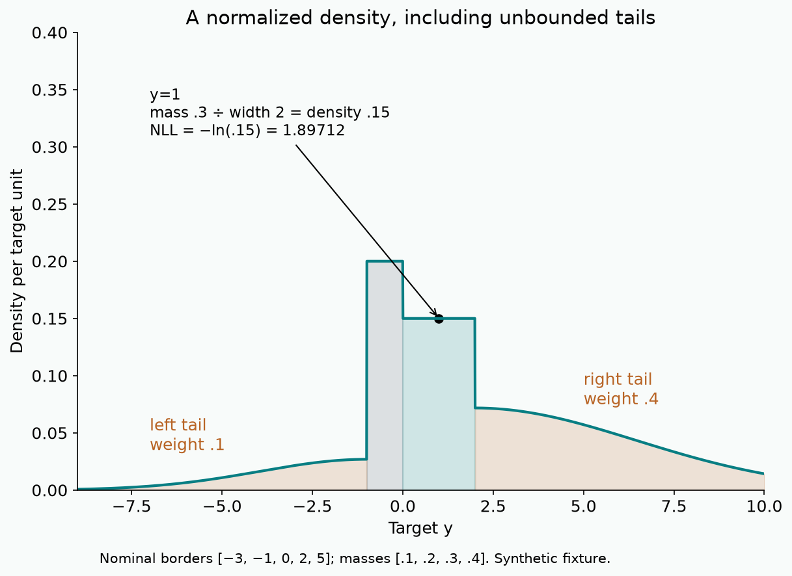
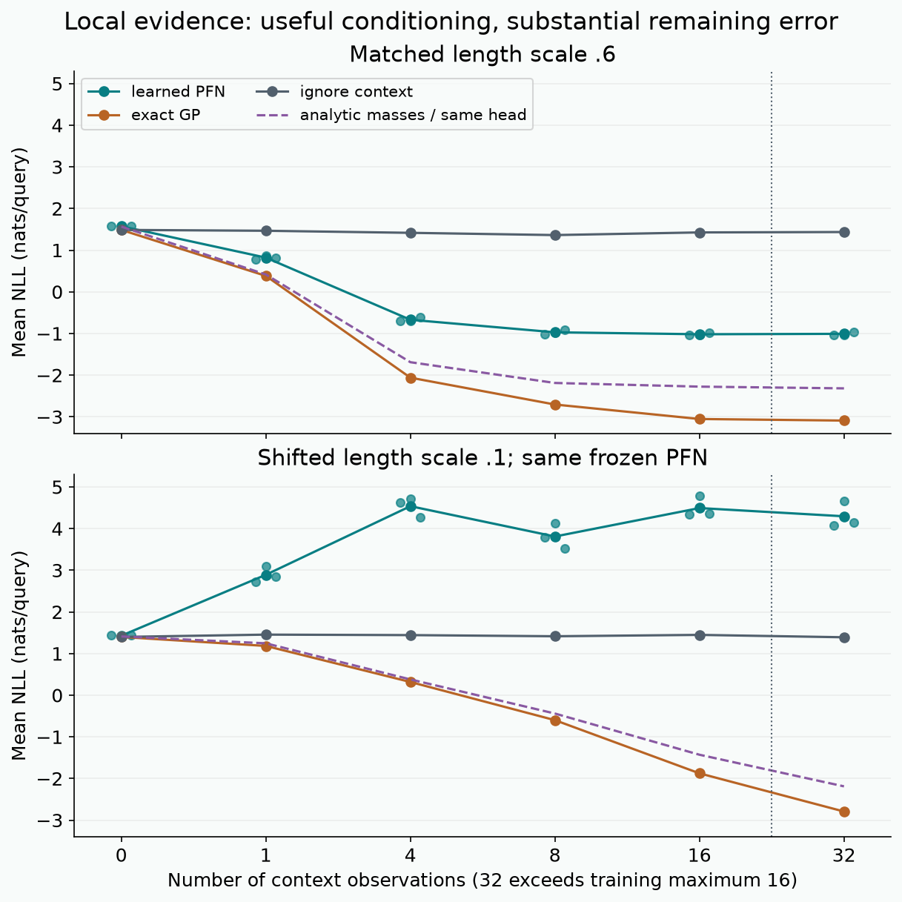
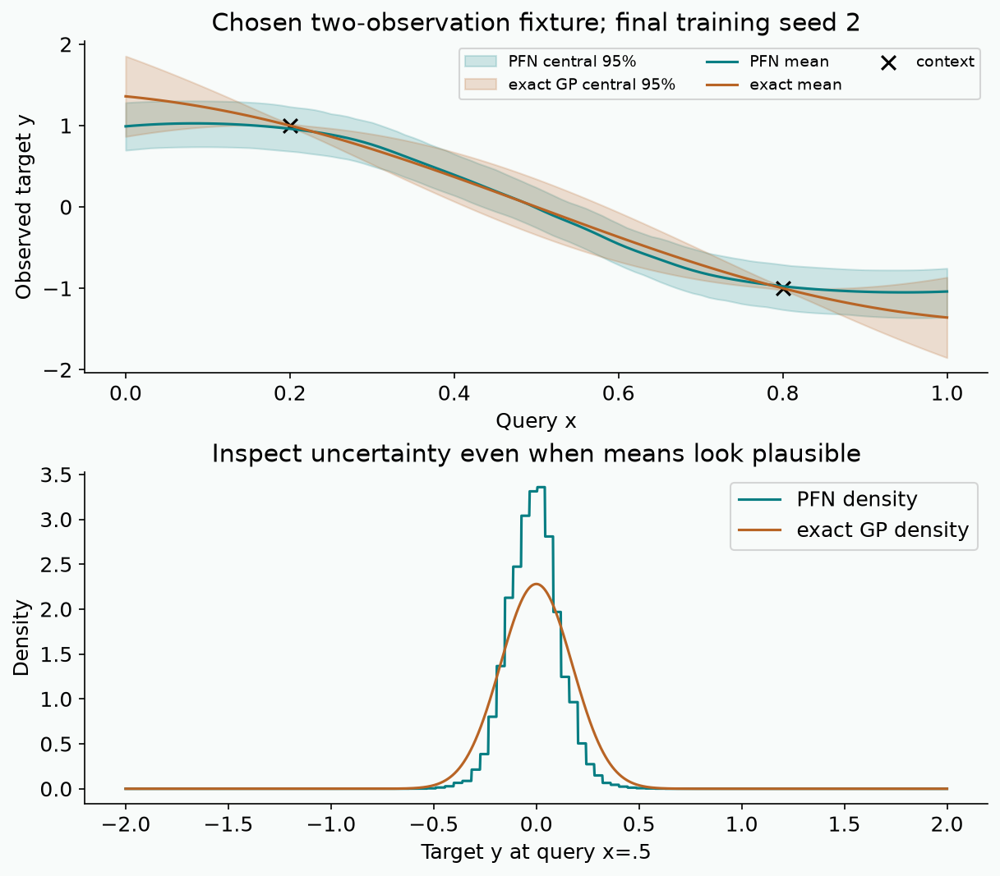

Year 2 · Quarter 3 · Lesson 061
Learn Bayesian prediction from sampled tasks
Retrieve before reading
Why must validation and test labels have separate roles? What changes when labels enter a forward pass instead of only a loss?
Learn an inference procedure¶
Your outcome: implement a row-token PFN, train it on freshly sampled functions, and determine where its predicted distribution approximates an exactly computable Bayesian answer. You will explain why labels can change a frozen network's prediction, trace what every attention token can read, and separate a correct loss from a successfully learned inference procedure. The lab exposes the sampler, full Transformer, probability-density head, optimizer loop and evaluator. This is the bridge from fitting one table in Lesson 060 to the pretrained table classifier in Lesson 062.
A task is a supervised-learning problem with its own unknown generating rule. A prior is a distribution over those rules, specified before that task's observations. Given one sampled rule, a likelihood describes its observations. The posterior is the distribution over rules after conditioning on the observations. A posterior predictive distribution, abbreviated PPD, averages the predictions of those remaining plausible rules. For latent task t, labeled context D, query features x and unknown target y:
p(t | D) ∝ p(D | t) p(t)
p(y | x,D) = ∫ p(y | x,t) p(t | D) dt
The normalizing constant in the first line makes posterior probabilities sum or integrate to one. The integral in the second line matters: making one best guess for the task and ignoring alternatives generally produces a different predictive distribution. In supervised Bayesian inference, the likelihood can condition on the feature design; in our GP experiment the features are independently uniform, so observing their locations does not change the prior over functions.
A conventional neural predictor optimizes weights on one table. A prior-data fitted network optimizes shared weights across many synthetic tables. A single pretraining example is therefore an entire context plus one or more held-out queries. Once pretraining ends, a new context changes the forward computation while the weights remain fixed. “No downstream training” means no downstream weight optimization in this basic use, not no labels, no computation or no earlier training cost. This is the mechanism introduced by Müller et al., Algorithm 1 and §§2–3.
For the relational mission, the important question is not whether synthetic data are automatically good. It is which properties a task generator makes probable: smooth response functions here, richer table-generating mechanisms later, eventually entity relationships and temporal structure. A learned inference procedure transfers only as far as its assumptions and approximation allow. This lesson has no evidence about relational benchmark performance.
Derive a posterior you can check exactly¶
Start with an easier posterior. Draw a coin probability θ ~ Beta(α,β), then draw all context and query labels independently conditional on that same θ. For s successes and f failures, the prior density contributes θ^(α−1)(1−θ)^(β−1) and the likelihood contributes θ^s(1−θ)^f. Multiplication adds exponents. The posterior is Beta(α+s,β+f), and the next-success probability is its mean:
P(next label = 1 | D) = (α+s)/(α+β+s+f)
Beta(1,1), labels [1,0,1] -> Beta(3,2) -> 3/5 = 0.6
This shrinks the empirical rate 2/3 toward the prior mean 1/2. With no observations it returns the prior mean; with many observations the prior's relative weight decreases. Counts retain everything needed for this exchangeable coin task, but they cannot encode where a function was observed. Two regression contexts with identical target counts but different feature locations usually give different predictions.
The historical package trained a CountPFN, an MLP of those sufficient statistics. Its old measurements remain available with their original operator identity. That is a useful objective sanity check, but it omits learned row representations, attention and a regression density. The current lab implements those missing mechanisms rather than treating the coin experiment as the whole paper.
Sample a distribution over functions¶
Our main experiment follows the fixed Gaussian-process study in paper §5.1 and Appendix F. A Gaussian process, or GP, specifies a jointly Gaussian distribution for the function values at any finite set of inputs. You do not have to enumerate every possible function: at the locations you need, construct its covariance matrix and sample the corresponding vector.
The radial basis function kernel, or RBF kernel, sets how strongly two locations covary. Here output variance is one, length scale ℓ=.6, and independent observation-noise variance is σ²=.0001. Inputs are uniformly sampled from [0,1]^F; the local lab uses one feature. For any two feature vectors:
k(xi,xj) = exp(− ||xi−xj||² / (2ℓ²))
Σij = k(xi,xj) + σ² · 1[i=j]
L = Cholesky(Σ), so L Lᵀ = Σ
z ~ Normal(0,I), and y = Lz
A covariance measures how two centered quantities vary together. Nearby inputs have covariance near one; distance equal to the length scale gives covariance exp(−1/2)≈.607. The diagonal is 1.0001: signal variance plus observation variance, not a noise standard deviation of .0001. Sampling independent normal labels would preserve that diagonal but destroy the off-diagonal relationships that context is supposed to reveal.
The Cholesky factor is lower triangular. Since E[z]=0 and E[zzᵀ]=I, the sampled vector has mean zero and covariance E[LzzᵀLᵀ]=LLᵀ=Σ. Context rows and query rows are drawn together from this vector. The split hides some labels from the predictor; it does not redraw a new function for them. sample_gp uses float64 for factorization because very small noise and neighboring inputs can make the matrix ill conditioned, then supplies float32 observations to the network. No analytic posterior is used as a training label.
The original GP sampler samples through GPyTorch. Our visible matrix sampler avoids importing the load-bearing mechanism; the evaluator is independently checked against the same Gaussian conditioning algebra.
Condition the joint Gaussian¶
Write K for the signal-only kernel matrix; the sampler above called the noisy covariance Σ. Partition K into context and query blocks. Let C = Kcc + σ²I be the noisy context covariance, Kcq be the signal covariance between context and query locations, and Kqq be the query signal covariance. The joint vector (yc,yq) is Gaussian with those off-diagonal blocks and noisy diagonal blocks. Define A=Kqc C⁻¹ and residual r=yq−Ayc. Then Cov(r,yc)=Kqc−AC=0. Joint Gaussianity makes that residual independent of context. Its covariance is Kqq+σ²I−Kqc C⁻¹Kcq. Therefore conditioning fixes Ayc while leaving the residual distribution unchanged:
mean = Kqc C⁻¹ yc
covariance = Kqq + σ²I − Kqc C⁻¹ Kcq
The second term in the covariance subtracts uncertainty explained by context. It does not subtract observation noise at the query. We predict the next observed target yq, as the source evaluator does; uncertainty about the latent noiseless function alone omits that final σ². A diagonal query variance is enough for the per-query log likelihood evaluated here, although the joint GP also correlates different query predictions. Our PFN head predicts marginal distributions and does not return a joint query covariance.
The code never constructs C⁻¹. Solve C a = yc using the Cholesky factor, then multiply Kqc a. Solve L V = Kcq; the diagonal uncertainty reduction is the sum of squared entries of each column of V. This is more stable than forming an inverse and makes the shapes visible: C is n×n, Kcq is n×m, means and marginal variances have m entries. With empty context there is nothing to condition on, so the mean is zero and variance is 1.0001.
Use one observation at .2 with value 1, and query at .8. Their distance is .6, hence k=.60653066. The conditional mean is .60653066/1.0001≈.60647001 and the noisy query variance is 1.0001−.60653066²/1.0001≈.63225734. Bring the query toward .2: correlation rises, the mean approaches the observed value, and variance falls. It stays positive because observations are noisy. Change the observed target instead: the conditional mean changes linearly, while the conditional variance is unchanged for this fixed GP.

These formulas are the audit oracle, not an alternative neural training target. Their derivation and the distinction between latent-function and noisy-target prediction follow Rasmussen and Williams, Chapter 2, equations 2.22–2.24 and Algorithm 2.1. In the HTML lesson, the widget above the figure holds the prior and observed target fixed while changing query distance; the portable image captures the default state.
A two-variable derivation without a matrix inverse¶
Take one context and one query, both with marginal variance v=1.0001 and covariance k. Define a residual r=yq−(k/v)yc. Its covariance with yc is k−(k/v)v=0. Jointly Gaussian uncorrelated variables are independent, so r is independent of the observed context. Its variance is v−2k²/v+k²/v=v−k²/v.
Rearrange yq=(k/v)yc+r. After observing yc, the first term is fixed and the residual retains mean zero and variance v−k²/v. This derives the one-observation posterior used in the widget. The matrix version chooses coefficients that make the residual uncorrelated with every context coordinate: solve C a=Kcq rather than dividing by one scalar v.
When the query is exactly at a noisy context location, two observations of the same latent function value still have separate observation noise. The predicted noisy-target variance is therefore not zero. Setting it to zero would give infinite NLL on almost every fresh noisy target. If you accidentally add noise to the cross-covariance as well, you instead act as though the query reuses the identical noise realization. The independent scalar CHECK is designed to catch that confusion.
Why held-out likelihood learns the Bayesian answer¶
Denote the network parameters by φ, to distinguish them from a latent task. At each step sample a complete dataset from the prior, reveal context D, and train qφ(y|x,D) on sampled held-out targets. The prior-data negative log likelihood, or prior-data NLL, is the expected negative log density assigned to those targets:
L(φ) = E[D,x,y] [−log qφ(y | x,D)]
= E[D,x] ∫ p(y | x,D) [−log qφ(y | x,D)] dy
= E[D,x] { H[p(· | x,D)] + KL[p(· | x,D) || qφ(· | x,D)] }
H is the predictive entropy (differential entropy for continuous targets). The Kullback–Leibler divergence, or KL, is the expected log density ratio under the first distribution. It is nonnegative. The entropy term does not depend on network weights, so reducing the population objective reduces expected forward KL. This is an expectation over the chosen prior, not a universal theorem about every possible dataset. Finite capacity, imperfect optimization, finite samples and a constrained output family all limit the actual approximation. The paper's optimum statement additionally assumes the target distribution belongs to the model family.
NLL is measured in natural-log units, or nats. For a continuous density it can be negative: a narrow density can exceed one per target unit while its integral is still one. Comparing NLL across incompatible target units is meaningless. We keep raw GP target units fixed. A finite test sample can even have a negative measured NLL difference relative to the oracle; nonnegative KL is a population statement, not a restriction on every sampled log ratio.
Every training step sees fresh sampled datasets. This removes repeated use of a finite pretraining table, but it does not make an individual minibatch loss a monotonic progress certificate, eliminate generator misspecification, or prevent overfitting a reused evaluation panel through manual choices. The local run fixes its recipe in advance, performs no test-based model selection, and reports the final weights. Larger compute runs are separate experiments.
Why the same task must generate context and target¶
Consider the coin construction again. If the query uses a newly sampled, independent coin probability, conditioning on the context cannot change its predictive probability. A Beta(1,1) query remains Bernoulli(1/2) no matter how many context successes were observed. A learner could still optimize its training loss successfully, but the generator no longer asks it to infer a shared task.
For our GP, the analogous mistake is drawing a fresh latent function for the query. The full covariance becomes block diagonal between context and query: Kcq is zero, so Gaussian conditioning returns the prior mean and variance. The notebook executes a paired covariance check with correct joint draws and an independent-task query replacement. It is a check of generator semantics, not a second model-training comparison. Do not confuse it with shuffling context labels at inference: that intervention corrupts the evidence provided to an already trained predictor.
The important causal chain is therefore generator → joint distribution → conditional distribution → expected scoring-rule optimum. An impressive loss curve cannot repair the wrong first link. By contrast, feeding analytic posterior means as targets would preserve part of the desired answer but change the learning problem to supervised distillation. This lab deliberately trains on stochastic query labels, so the expected-objective argument does real work.
Model architecture: the original row PFN¶
Lesson 061 / architecture study
Row PFN · infer from a labeled set
Trace this: Can a query read itself without reading its hidden target?
The forward path
- Sample and split a GP taskOne joint function draw; reveal n context labels, hide m query labels.
x: B × N × F; yc: B × n - Encode whole rowsContext: Ex(x)+Ey(y). Query: Ex(x) only. No positional encoding.
B × N × d; lab d=64 - Masked attention residualAll context columns plus identity. H=4 heads; concatenate → output projection.
u = LayerNorm(h + Attention(h)) - GELU residual; repeat three blocksLinear 64→128 → GELU → Linear 128→64; independent postnorm blocks.
h′ = LayerNorm(u + FFN(u)) - Predict query densitiesQuery states → Linear 64→128 → GELU → Linear 128→64; softmax masses.
B × m × 64 → full-support Riemann density - Train / inferPretraining query NLL updates weights. A new task only changes context inputs.
no query labels enter forward(x,yc)
Inside the key operation
One head: equal allowed scores
| receives ↓ | c1 | c2 | q1 | q2 |
|---|---|---|---|---|
| c1 reads | ½ | ½ | × | × |
| c2 reads | ½ | ½ | × | × |
| q1 reads | ⅓ | ⅓ | ⅓ | × |
| q2 reads | ⅓ | ⅓ | × | ⅓ |
| values | 2 | 6 | 10 | 90 |
Synthetic one-coordinate attention fixture, not trained weights. Context outputs equal 4; q2 initially equals 98/3. Every block preserves this information boundary. Ec=Ex(x)+Ey(y), Eq=Ex(x); the feature encoder Ex is shared. Dashed path is the pretraining gradient; it is absent at inference.
Variant & evidence. Original released row PFN mask includes query self edges. Postnorm GELU blocks, zero initial attention/FFN output projections, dropout 0. Local width 64/layers 3/bins 64 differs from original large GP training. Full-support tails preserve density outside sampled borders.
The current RowPFN implements the original released row Transformer. Let B be the number of independent tasks per batch, N=n+m total rows, F feature count, d embedding width, H attention heads, and R output bins. The lab uses F=1, d=64, H=4, R=64, three distinct blocks and an FFN hidden width of 128.
- Project features with one shared affine map
Ex: F→d. Project known scalar targets withEy: 1→d. Context tokeniisEx(xi)+Ey(yi); a query token is onlyEx(xq). There is no fabricated zero target, unknown-label embedding or positional encoding in this variant. The forward signature accepts only context labels. - For each block, project tokens into query, key and value vectors, splitting width
dintoHheads of widthd/H. Compute scaled dot products, add the access mask, apply a softmax over sending rows, and form a weighted sum of their value vectors. Concatenate heads and apply the output projection. - Apply the original postnorm residuals:
u=LayerNorm(h+attention(h)), thenh'=LayerNorm(u+W2 GELU(W1u+b1)+b2). Layer normalization standardizes a token's coordinates and learns a scale and bias. GELU is a smooth nonlinear activation. Each block has its own parameters. The source clones one initialized block; its attention output projection and FFN second projection start at zero, allowing residual states to dominate initially. - Read the final query states through
Linear(d,128)→GELU→Linear(128,R). Softmax gives bin masses. A full-support Riemann distribution converts those masses into a probability density for real-valued targets. The loss is query NLL, not MSE of a point prediction.
The pinned original Transformer source resolves a subtlety absent from the short paper description: its mask admits every context column plus the diagonal. A query can therefore read its own unlabeled feature representation as well as all context rows; it cannot read another query. A context cannot read any query. Self-attention is not target leakage because its target was never encoded. At n=0, each query reads itself, so attention remains defined.
Rows of an attention matrix are receivers; columns are senders. For two contexts and two queries, the allowed graph is:
c1 c2 q1 q2
c1 reads ✓ ✓ × ×
c2 reads ✓ ✓ × ×
q1 reads ✓ ✓ ✓ ×
q2 reads ✓ ✓ × ✓
This restriction must hold at every block. Otherwise query 2 could influence a context in block 1 and that context could influence query 1 in block 2, even if a direct query-to-query edge were absent. Without positional encodings, jointly permuting context feature/label pairs permutes context states and leaves query predictions unchanged, up to floating-point reduction differences. Independently shuffling targets breaks pairings and is not an invariance. Packing extra queries should leave a fixed query's prediction unchanged.
Trace before running: suppose allowed attention scores are all zero and one value coordinate is [2,6,10,90]. Context 1 reads (2+6)/2=4. Query 1 reads (2+6+10)/3=6. Changing the last value cannot change query 1. The notebook verifies those arithmetic and information-flow properties, then checks nonzero-branch copied-weight forward and gradient parity against the original implementation. That validates the named model computation, not the original training result.
Turn bin masses into a continuous density¶
A regression head that emits only a mean loses predictive uncertainty. Even a Gaussian mean/variance head restricts the answer to one symmetric bell. The paper's Riemann distribution represents a density using many bars. Boundaries are chosen from prior-data target quantiles so that interior target intervals have roughly equal prior mass; network logits determine the masses for a particular context and query.
For an interior bin with edges bi,bi+1, width wi=bi+1−bi, and probability mass pi, its density is pi/wi. Distinguish probability from density: the chance of a continuous variable equaling exactly one real number is zero. Density integrates over an interval to yield probability. At a target in that bin the loss is −log(pi)+log(wi).
A fixed bounded histogram assigns zero probability beyond its outer borders, which would give infinite NLL to possible Gaussian targets. The full-support head replaces its first and last bars by half-normal components. A half-normal is the nonnegative magnitude of a zero-mean normal variable. Anchor the left tail at the upper edge of the first nominal bin, the right tail at the lower edge of the last nominal bin, and reflect the left component toward negative infinity. If nominal tail width is w, set scale s=w/.67448975; then half of that component's mass lies within the nominal width.
left density = p0 × sqrt(2/π)/sL × exp(−(b1−y)²/(2sL²)), y ≤ b1
interior = pi / wi
right density = pR−1 × sqrt(2/π)/sR × exp(−(y−bR−1)²/(2sR²))
Each component integrates to its softmax mass and the masses sum to one. The source's tail loss cancels the provisional width term and inserts the weighted half-normal log density. We retain those mixture weights; reading the typeset Appendix E.2 equation literally would miss them. Boundary assignment follows searchsorted's left convention; isolated boundary points have zero probability, but tests cover them so code behavior is explicit.
For edges [-3,-1,0,2,5] and masses [.1,.2,.3,.4], target y=1 lies in a width-two interior bin. Its density is .3/2=.15, so NLL is 1.89712. Using .3 directly would incorrectly report 1.20397. Targets beyond five remain possible under the right tail. Fixed bars cannot express arbitrary sharp within-bin peaks, and fixed tail scales cannot express arbitrary tail shapes: finite-bin approximation remains a real limitation even with perfect optimization.

The model is unaware of a bar's width when predicting its mass. Widths and tail scales enter density scoring and summary calculations. Our borders use 65,536 independent draws from the known marginal Normal(0,1.0001) and remain fixed. The outer nominal borders are sampled extremes; after replacing tails, their nominal intervals no longer each integrate to exactly 1/R. This is a density approximation, not an exact discretization of the GP posterior. See the original full-support implementation.
Three approximation errors can coexist¶
First, a finite density head imposes a representation error: a uniform interior bar cannot reproduce a Gaussian density that changes rapidly inside that bar. Second, finite optimization can fail to find even the best bin masses for the available architecture. Third, the held-out task sample estimates population performance with noise. These are distinct from prior mismatch, where the generator's intended Bayesian answer itself may be wrong for the application.
With fixed borders, the best categorical mass for a bin is its true posterior probability. That does not make the within-bin uniform density exact. With half-normal tails, there is an additional fixed component-shape restriction. More bins can reduce interior approximation error but increase output parameters, data requirements and numerical demands. Training longer does not automatically eliminate every kind of error.
The theorem about existence of increasingly fine Riemann distributions is not a finite-64-bin error bound. Also track KL direction: the population NLL decomposition uses KL(p || q), whereas the paper's finite-support approximation theorem is stated using KL(q || p). Substituting one for the other without conditions would be a mathematical mistake. For Gaussian targets a bounded-support q has infinite forward KL wherever p has positive tail mass; this motivates the full-support head in our actual likelihood experiment.
Fit on sampled tasks, evaluate against analysis¶
Before looking at results, predict two things: will this small PFN gain from context under its training prior, and will it match the almost-noiseless exact GP once several observations are available? These are different success criteria. Also predict what happens when test functions are much less smooth than the generator's functions.
The new author experiment uses three independent weight/training-task seeds, 2,000 Adam updates each, batch size 32 and total length 17. It samples context size n=0,…,16 with weights proportional to 1/(17−n) and trains on all remaining query labels. This follows the released context-size sampling idea; the loss averages queries per minibatch, as the released loop does. The learning rate warms up for 10% of steps and then decays by a cosine. No analytic mean, variance or probability is used as a training target.
For each context size 0,1,4,8,16,32, evaluate 256 fresh GP tasks, each with one observed query target. The task stream is held fixed across training seeds, enabling paired comparisons. Context 32 is outside the maximum training context; it is a length-transfer probe. Repeat the panel with test length scale .1, while keeping the trained model at .6. This is a prior-mismatch intervention, not a second training run. The exact GP oracle is recalculated using the true test prior in each regime.
Report PFN NLL, exact noisy GP NLL, marginal-prior NLL, paired excess NLL, squared error of the PFN mean against the exact posterior mean, and central 95% predictive coverage. Coverage is the fraction of realized targets falling between the distribution's 2.5% and 97.5% quantiles, checked through its CDF. An uninformative but correctly calibrated prior can achieve good coverage while ignoring context; read it together with NLL and mean error.

Measured author panel
PFN is mean ± training-seed SD. Excess is PFN−exact GP with a paired-task 95% t interval conditional on the three trained models. Head oracle uses analytic region masses; it is not a trained model.
| Prior | Context | PFN NLL | GP NLL | Head oracle | Excess ±95% | Coverage |
|---|---|---|---|---|---|---|
| matched | 0 | 1.573 ± 0.005 | 1.486 | 1.565 | 0.087 ± 0.050 | 92.7% |
| matched | 1 | 0.821 ± 0.044 | 0.382 | 0.415 | 0.438 ± 0.117 | 88.9% |
| matched | 4 | -0.671 ± 0.049 | -2.061 | -1.690 | 1.390 ± 0.135 | 96.6% |
| matched | 8 | -0.972 ± 0.052 | -2.706 | -2.188 | 1.734 ± 0.111 | 98.4% |
| matched | 16 | -1.019 ± 0.036 | -3.053 | -2.276 | 2.034 ± 0.109 | 100.0% |
| matched | 32 | -1.009 ± 0.042 | -3.091 | -2.318 | 2.082 ± 0.110 | 100.0% |
| prior shift | 0 | 1.429 ± 0.016 | 1.399 | 1.411 | 0.030 ± 0.028 | 96.4% |
| prior shift | 1 | 2.891 ± 0.186 | 1.183 | 1.245 | 1.708 ± 0.384 | 70.4% |
| prior shift | 4 | 4.537 ± 0.241 | 0.317 | 0.379 | 4.220 ± 0.527 | 38.4% |
| prior shift | 8 | 3.810 ± 0.306 | -0.599 | -0.440 | 4.409 ± 0.552 | 43.4% |
| prior shift | 16 | 4.493 ± 0.252 | -1.876 | -1.429 | 6.368 ± 0.596 | 39.3% |
| prior shift | 32 | 4.295 ± 0.317 | -2.792 | -2.188 | 7.087 ± 0.587 | 37.0% |

What actually happened: at matched context size 16, mean PFN NLL was −1.0189, versus −3.0532 for the exact GP and 1.4258 for ignoring context. The model learned useful conditioning but remained 2.0342 nats/query behind the oracle. Its 100% measured central 95% coverage at this context size is consistent with overly broad predictions, not a reason to call it perfectly calibrated. Under length-scale shift, context 16 NLL rose to 4.4927 and coverage fell to 39.3%. The same fixed prior marginal is still appropriate without context because changing length scale changes correlations, not marginal variance.
A separate diagnostic puts analytic GP probability masses into the identical 64-bin head, without training a network. At matched context 16 its NLL is −2.2763: approximately .7769 nats above the exact GP, while the learned PFN is a further 1.2573 nats worse. This separates finite-head limitations from learned-mass error on these sampled tasks. It is not another trained baseline, and finite-sample differences are not universal lower bounds. Diagnostic evidence records every context and regime.
The evidence table shows training-seed standard deviation over the same tasks. The paired task interval averages the log-ratio within a task over the three trained models, then uses a t interval across 256 independent tasks. It is conditional on these trained weights. It does not treat 768 reused-task predictions as independent tasks or establish generalization across real datasets. We preserve compressed raw input/target/logit arrays, oracle outputs, task seeds, library versions and source identities so the metrics can be reconstructed.
The curve fixes two observations, (x=.2,y=1) and (x=.8,y=−1), and displays the final training seed's predictive mean. It is a chosen diagnostic fixture, separate from the random evaluation panel; it is not representative evidence by itself. The density and GP intervals show whether an apparently plausible mean still hides a poor uncertainty approximation. A deficient local approximation is a useful failure to diagnose, not evidence that the paper's much larger experiment failed.
Compare where the information enters¶
An FT-Transformer from Lesson 050 makes features within one row into tokens; training labels update weights through its supervised loss. Other rows' labels are not a forward-pass input. This PFN instead makes whole rows into tokens and adds context labels directly to those tokens. Its main adaptation to a new dataset is an attention computation conditioned on those labeled rows. Mixing the two token axes would implement a different model even if both use the word Transformer.
SAINT in Lesson 047 also introduced communication across rows, but that alone does not make it a PFN. Its supervised training and optional pretraining use different objectives and data generation. The defining mechanism here is fitting held-out predictive distributions across independently sampled tasks, together with an information boundary that admits only the current context labels.
TabR in Lesson 052 retrieves labeled training examples through a learned representation and adds a learned correction to their label embeddings. It learns a task-specific predictor from the downstream dataset. The basic PFN instead learns a shared inference procedure before seeing that downstream dataset; it then conditions on context with frozen weights. Both can depend on context labels during a forward pass, but their optimization units and transfer assumptions differ. For a relational task, deciding what constitutes a context row or a sampled task is a substantive modeling choice, not a formatting detail.
Exit: distinguish three kinds of success¶
The notebook's five live tasks implement the GP generator, Gaussian conditioning, access mask, attention aggregation and full-support density loss. Each task has a goal, reason, hint and immediate diagnostic CHECK. The entire model and training loop are visible. A fresh smoke calls those exact functions, while the larger author panel is clearly labeled reference evidence. You must save the live kernel's functions, class methods and preset values with your EXIT, not merely a hash of files elsewhere on disk.
Give three verdicts. Operator validation: did the Gaussian algebra, probability normalization, information-flow probes and copied-weight comparison pass? Local learned approximation: which contexts and regimes support useful conditioning, and how far is the trained model from the exact PPD? Paper result reproduction: the original Figure 4 study uses five features, much larger models, contexts approaching 2,000 and 1,000 evaluation datasets per context. Those results are cited, not reproduced here. Our closer operator increases features, context, width, bins and training budget; it is an executable step toward that target and remains explicitly different.
The source paper also studies hyperpriors over GP parameters, Bayesian neural-network priors, small real tabular classification and Omniglot few-shot learning. This unit's selected target is the fixed-GP study. It does not measure those other experiments or inherit their runtime and benchmark claims. Later TabPFN lessons change both the prior and task contract; a row-attention mechanism alone does not certify their pretrained models.
Write a teach-back explaining how a model trained on sampled labels can approximate an integral it never evaluates during training. Include one way that can fail, one observed metric, and one intervention that distinguishes a dead context path from prior mismatch. Ask the teacher about any unresolved step; a runnable EXIT and a cold explanation are required before assessing mastery. Source inventory and reproduction commands keep paper claims, local measurements and unrun work separate.